第220期
トレーディア新聞社
定価 無料
新聞THE TREDIA SHIMBUN
夏季
本日14面
1面総合
黒潮、オリョルッル王国へ宣戦
開戦は第225期
同盟国・胡椒の商船三隻に被害 開戦は五期後
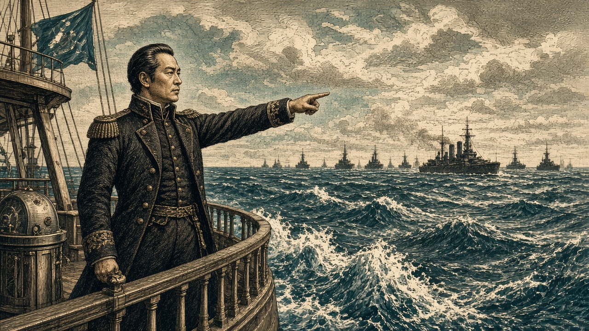
【総合部】第220期、黒潮自治国はオリョルッル王国へ宣戦布告した。開戦は第225期。今期中の交戦はなく、五期後に戦闘が始まる。黒潮側が示した宣戦の理由は、オリョルッルが胡椒帝国の民間商船を攻撃し続けていることだ。胡椒は黒潮と同じ同盟軍に属する。
今期も胡椒の商船二隻が損傷し、一隻が撃沈された。被害は（48,29）（49,29）の損傷、（49,30）の撃沈として記録された。黒潮は四つの艦隊に目的地を設定し、開戦に備えて艦の配置を決め始めた。攻撃を受けた商船の修理や航路の見直しと並び、黒潮側でも艦隊を動かす準備が進む。
黒潮は宣戦の理由を「同盟国の商船を守るため」と説明する。胡椒の船は民間の交易船で、撃沈された一隻に加え、損傷した二隻も修理を要する。攻撃が続けば、船の運航だけでなく港の荷揚げや交易にも影響が及ぶ。黒潮が開戦までの五期にどのような備えを進めるのか、同盟国の航路を守るという宣言の実効性が問われる。
黒潮の人口は三万四千百人、領土は四区画。人口二百五十六万八千四百人、四百七区画を持つオリョルッル王国とは、国の規模に大きな開きがある。開戦までの五期で黒潮がどこまで艦隊を整え、同盟国の商船を守る態勢を築けるかが問われる。
| 今期の主な数字 | |
|---|---|
| 黒潮→オリョルッル | 宣戦（225開戦） |
| 翠湖兵站 | （45,36）（46,37）陥落 |
| 投降予備兵 | 1,400＋1,600 |
| 胡椒商船 | 撃沈（49,30） |
| なのです×白波 | 10,300／4,700 |
| 火災死者 | 5万9,400人 |
| 控え | オリョルッル×藍岬（224）／黒潮×オリョルッル（225） |
- 2面胡椒商船と宣戦
- 3面翠湖兵站陥落
- 4面藍岬・スルガ戦線
- 5面なのです・金野
- 6面旧蒼森と控え
- 7面火災五万九千
- 8面乗り込んで奪船
- 9面国特集 シンジケート
- 10面夏の空
- 11面灯籠の労働祭
- 12面入門 奪船と陸砲
- 13面短信
- 14面編集後記
2面国際 黒潮
宣戦
胡椒の民間商船が相次いで攻撃 黒潮が宣戦
今期も損傷と撃沈 同盟の航路を守るため 開戦は第225期
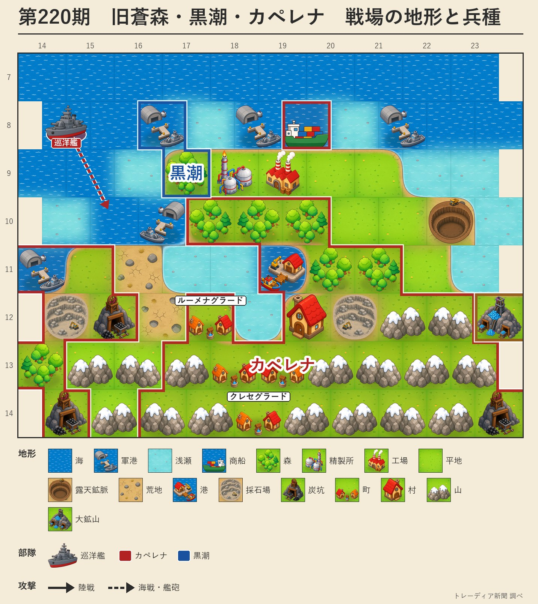
【政治部】黒潮自治国がオリョルッル王国へ宣戦した主な理由は、オリョルッルが胡椒帝国の民間商船を攻撃し続けていることだ。両国は第217期から戦争中で、今期も胡椒の商船が戦艦の攻撃を受けた。（48,29）と（49,29）では損傷、（49,30）では撃沈が確認された。胡椒は黒潮と同じ同盟軍に属し、民間の荷を運ぶ船が標的になっている。
潮見玄吾議長は評議会で、同盟の民間航路への攻撃を止める必要があると述べたうえで、こう続けた。「世界最大の国に宣戦して防衛に回ることで、神の力『はんで』の恩恵に浴することができる。よしんばオリョルッルが侵攻してきても、世界制覇をするのならいずれ倒す相手。先に倒してしまっても構わんのだろう？」。
さらに潮見は、亡国・緑丘公国と黄砂同盟を引き合いに出した。「オリョルッルは我らが色彩の名を冠する神の使徒の一角である緑丘を下したようだが、やつは使徒の中でも最弱の面汚しよ。それより多少はマシという程度の黄砂を倒せぬ以上、黒潮に勝てる道理はない」。
緑丘公国は第142期に滅亡し、首都はオリョルッル領となった。黄砂同盟とオリョルッル王国もかつて交戦し、のちに停戦した。潮見は、オリョルッルに滅ぼされた緑丘を「使徒の中でも最弱」と切り捨て、黄砂との戦いも引き合いに出して「黒潮に勝てる道理はない」と豪語した。
演説の前半では同盟国の商船を守ると訴え、後半では世界最大国を倒すことや世界制覇を口にした。防衛の説明から征服の誇示へ移る口調に、評議会の議場では議員が顔を見合わせたという。声明は強硬だが、開戦は五期先で、艦隊は目的地を定めた段階にある。宣言の大きさに見合う船と補給をそろえられるかが、今後の焦点になる。
| 黒潮自治国 | |
|---|---|
| 人口 | 3万4,100人 |
| 兵力 | 6万2,800人 |
| 領土 | 4区画 |
| 艦船 | 9 |
| 交戦国（今期末） | なし（225開戦待ち） |
| 陣営 | 同盟軍 |
- 胡椒の民間商船が攻撃継続
- 今期も損傷と撃沈
- 同盟軍の航路
- 開戦は225期
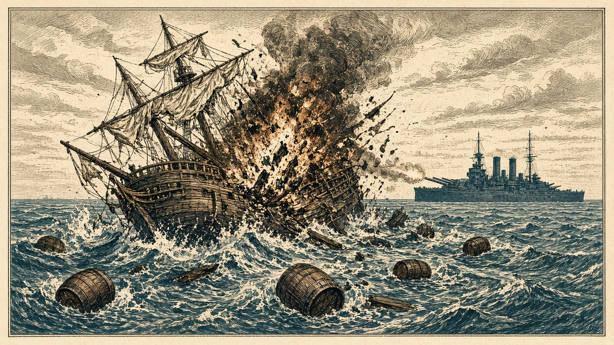

フィルノア跡 潮見計器
航路を守る前に、方位を。
方位盤・気圧計。
黒潮・外洋航路
3面国際 翠湖
占領
オリョルッル、翠湖の兵站二つを占領
（45,36）と（46,37） 予備兵3,000人が投降 双方の損害はオリョルッル200人・翠湖3,100人
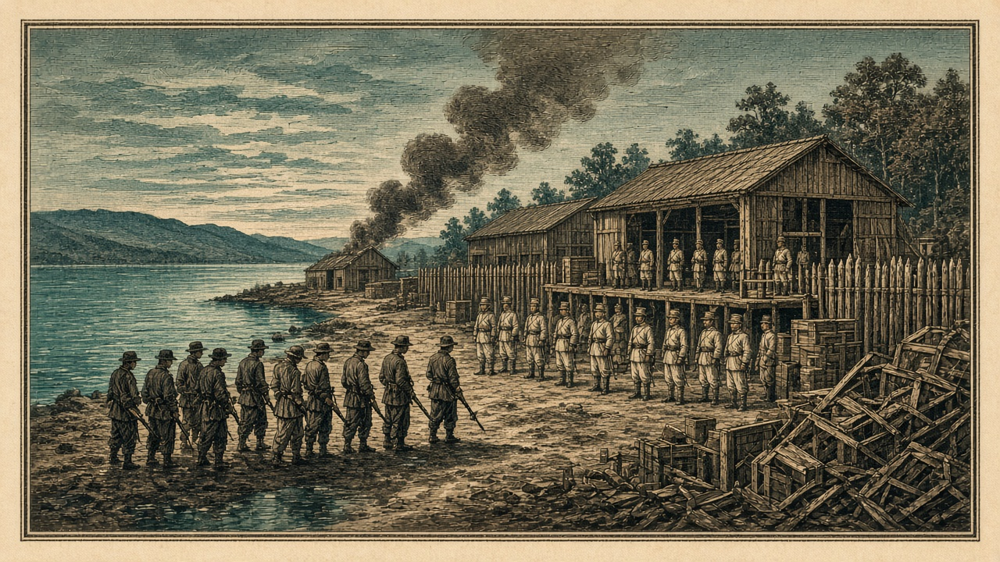
【国際部】オリョルッル王国は翠湖自治州の兵站基地（45,36）と（46,37）を占領した。（45,36）では第24軍歩兵が翠湖Corps1を全滅させ、予備兵千四百人が投降した。（46,37）では予備兵千六百人が投降した。双方の損害は、オリョルッル王国二百人、翠湖三千百人。
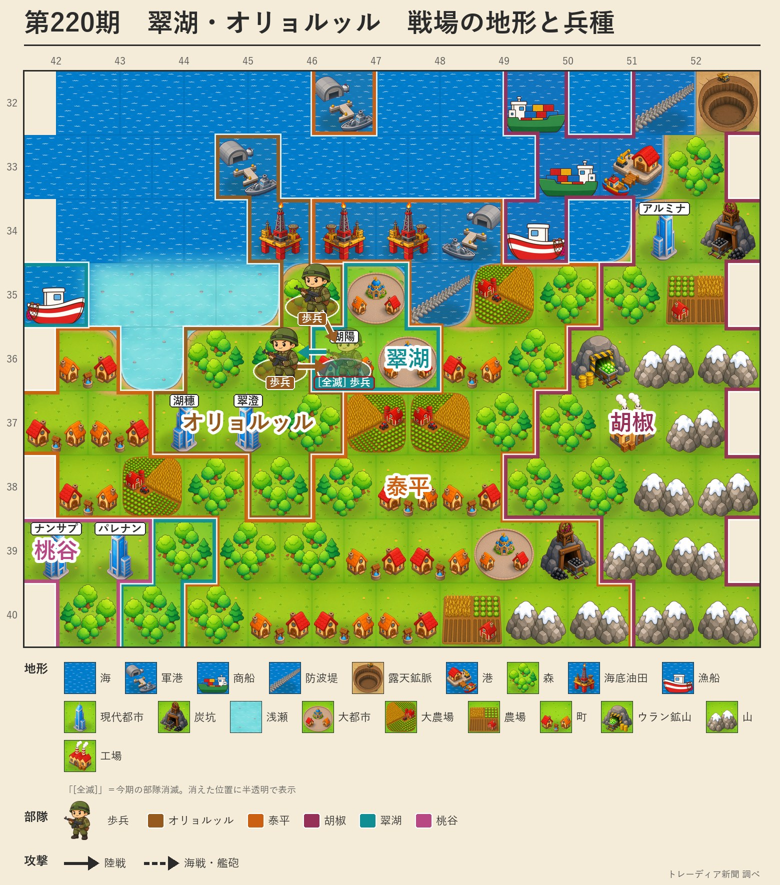
占領された二地点はいずれも兵站基地で、前線へ物資を送り出す中継点だった。翠湖の人口は九千七百人、領土は五区画。首都湖陽（46,36）は残るが、その周辺にあった補給拠点を二つ失い、残る倉庫と道路へ負担が集中する。
翠湖はカペレナ・オリョルッル・黄砂と戦争中で、連邦軍の一員として三つの相手を抱える。兵站基地は前線へ食料、弾薬、交換部品を送り出す中継点だ。二地点が相次いで占領されたことで、湖陽へ通じる補給路は短くなり、残る部隊は限られた倉庫と道路を使い回すことになる。
投降した予備兵は合計三千人。部隊の穴を埋めるはずだった兵力がそのまま失われ、王国側は二百人の損害で二地点を押さえた。湖陽の市場では、荷車が兵站へ向かわず城門側へ引き返す光景が見られたと商人は話す。住民にとって気掛かりなのは地図上の色だけでなく、次の配給車がいつ来るかだ。
首都湖陽（46,36）は残る。守備側は湖陽周辺の部隊をどこへ置き、複数戦線のどこから兵を引くのか。停戦交渉の行方とともに、残った倉庫の在庫、輸送路の確保が州の持久力を左右する。
| 翠湖×オリョルッル | |
|---|---|
| 占領 | 兵站（45,36）（46,37） |
| 投降 | 予備兵1,400＋1,600 |
| オリョルッルの損害 | 200人 |
| 翠湖の損害 | 3,100人 |
| 翠湖人口 | 9,700人 |

湖陽 杭の湯茶寮
兵站のあとに、一杯の麦茶を。
麦茶・翡翠団子。
翠湖・湖陽
4面国際 藍岬・スルガ
戦線
カペレナ、藍岬・スルガへ攻勢継続
双方の損害はカペレナ1,300人・藍岬4,700人／カペレナ2,200人・スルガ3,200人
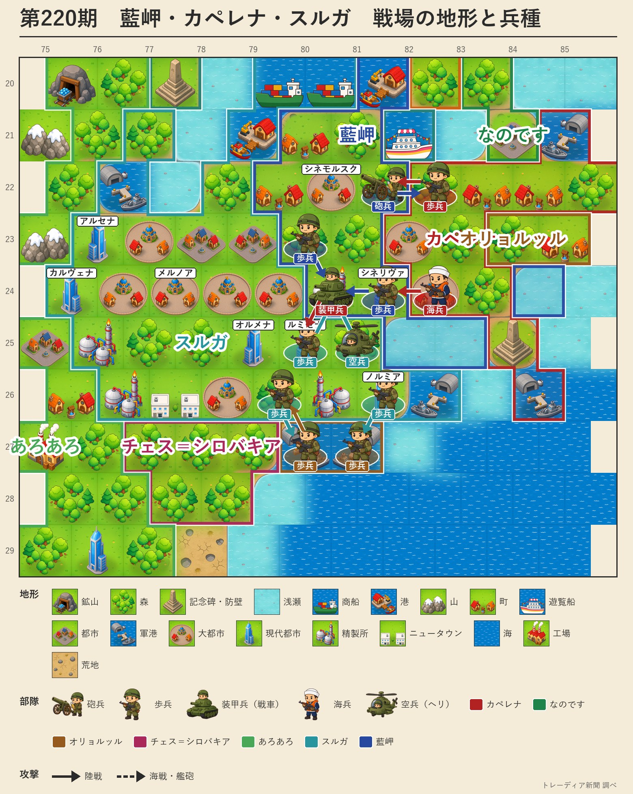
【国際部】カペレナ王国は藍岬共和国連邦とスルガへの攻勢を続けた。西部大陸攻略軍の装甲と海兵が藍岬・スルガの部隊と交戦し、双方の損害はカペレナ千三百人・藍岬四千七百人、カペレナ二千二百人・スルガ三千二百人となった。
藍岬はオリョルッル王国へ停戦の意思を打診し、スルガは黄砂同盟へ停戦を求めた。いずれも今期は合意に至っていない。オリョルッルは藍岬へ宣戦済みで、開戦は第224期に控える。返答を待つ外交と、すでに予定された新戦線が同じ沿岸で進む。
藍岬にとっては、カペレナ軍との今期の損害に加え、王国軍との戦闘開始が迫る。スルガもカペレナ、オリョルッル、黄砂を相手にし、艦船は一隻。停戦がまとまれば兵と船を一つの正面へ回せるが、返事がなければ今ある守備を薄く広げるほかない。各国の発表は損害を数字で示す一方、交代要員や補給の余力までは伝えていない。次期は戦況図の占領地と、停戦の返答を合わせて見る必要がある。
スルガ×オリョルッル
スルガ5,500人、王国1,100人の損害
【国際部】スルガとオリョルッル王国の戦線では、双方の損害がスルガ五千五百人、王国千百人となった。王国歩兵はスルガ第7軍へ三千三百人の戦果を挙げ、スルガ側の反撃は百人にとどまった。
スルガはカペレナ・オリョルッル・黄砂と戦争中で、艦船は一隻。メルノアを守りながら三正面を抱え、黄砂へ停戦を打診した。今期の対オリョルッル戦では王国側が上陸し、第7軍へ大きな損害を与えた。戦線は一か所の敗報で終わる話ではなく、沿岸の守備、港の警戒、各軍への補給を同時に続けなければならない。
カペレナとの交戦でもスルガ側の損害は三千二百人。兵の補充に時間がかかるなか、黄砂との停戦が成立するかどうかは、次に守る地点を決めるうえで重い。第224期に控える藍岬の開戦も迫り、外交の返答が戦場の配置に直結する。
| 今期の双方損害 | |
|---|---|
| カペレナ（対藍岬） | 1,300人 |
| 藍岬（対カペレナ） | 4,700人 |
| カペレナ（対スルガ） | 2,200人 |
| スルガ（対カペレナ） | 3,200人 |
| スルガ（対オリョルッル） | 5,500人 |
| オリョルッル（対スルガ） | 1,100人 |
シネモルスク 岬灯具
三正面の週も、港の灯りを。
ランプ・方位盤。
藍岬・シネモルスク
5面国際 なのです・金野
戦線
なのです軍1万300人、白波軍4,700人が損害
戦艦が金野・白波方面へ艦砲 橙原戦も継続
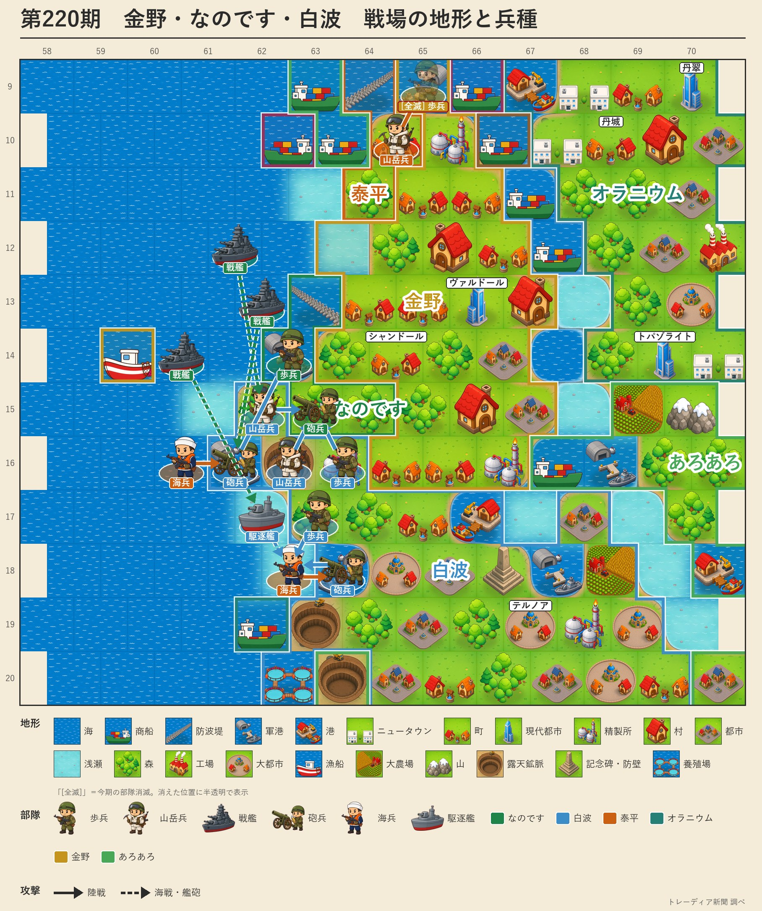
【国際部】なのです主義人民共和国と白波王国の戦線では、双方の損害がなのです一万三百人、白波四千七百人となった。なのですの戦艦は（62,17）（62,15）（61,16）などへ艦砲射撃を行い、金野方面の沿岸にも圧力をかけた。
橙原自治共和国との戦争では、双方の損害がなのです二百人、橙原四千三百人。橙原の人口は二千七百人、領土は一区画、兵力は二千人。食料は七十五万トンを超えるが、兵力を人口と同じ規模まで失った。倉庫に食料が積まれていても、前線へ運び、陣地を守る兵が足りなければ戦況は持ちこたえにくい。小国が兵力を使い果たした後、残る食料と住民をどう守るか。橙原の戦況は、領土の小ささに比して大きな損害を記録した。
なのです軍は白波、橙原の二正面で戦い、海上からも艦砲を撃った。損害数は前線ごとに異なり、陸戦の数字だけでは沿岸の圧力を読み切れない。白波では一万三百人の損害を出しながら、相手にも四千七百人の損害を与えた。戦場を広げる軍にとって、次期の補充と輸送が問われる。
金野方面では伯爵領の食料備蓄が六千五百トンと報じられた。三つの相手を抱え、なのです軍との戦争も続く金野にとって、補給の不足は戦場の兵だけでなく町の暮らしにも及ぶ。前線へ送る穀物が増えれば市場に出る量は細り、配給の遅れや価格の上昇に跳ね返る。なのです側の戦果が拡大するほど、伯領が戦線を維持する負担も重くなる。
金野・テキスタン
金野は三正面 テキスタンは泰平と継続
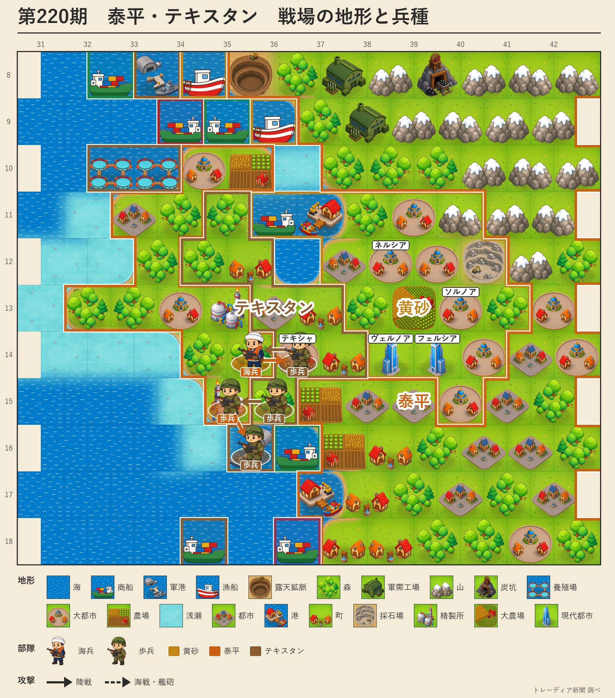
【国際部】金野伯爵領はチェス＝シロバキア共和国、なのです主義人民共和国、泰平天国と戦争中。公報の食料は六千五百トンにとどまる。前期に開戦した泰平戦も続き、戦場へ兵を送るほど、国内に残る備蓄は心もとない。白波と泰平の戦闘では白波四千六百人、泰平二千四百人の損害。テキスタンと泰平ではテキスタン六千三百人、泰平千六百人が失われた。
伯領の補給難は、三つの相手との戦争が別々の地図に描かれていても、同じ倉庫と輸送網に負担をかける。前線へ送る穀物を増やせば町の配給が細り、配給を優先すれば陣地への搬入が遅れる。公報の食料六千五百トンという数字は、戦果の大小とは別に、次の期まで持たせる備蓄の厳しさを示す。
| 主な双方損害 | |
|---|---|
| なのです（対白波） | 10,300人 |
| 白波（対なのです） | 4,700人 |
| テキスタン（対泰平） | 6,300人 |
| 泰平（対テキスタン） | 1,600人 |
| 白波（対泰平） | 4,600人 |
| 泰平（対白波） | 2,400人 |
| 橙原（対なのです） | 4,300人 |

シャンドール 麦倉
三正面の週も、一杯の麦を。
麦・雑穀。
金野・シャンドール
6面国際 旧蒼森・控え
領有
カペレナ、山（21,14）を占領 旧蒼森沖で艦砲
黒潮は交戦国なしのまま宣戦控え 火種の監視と海戦準備が並走
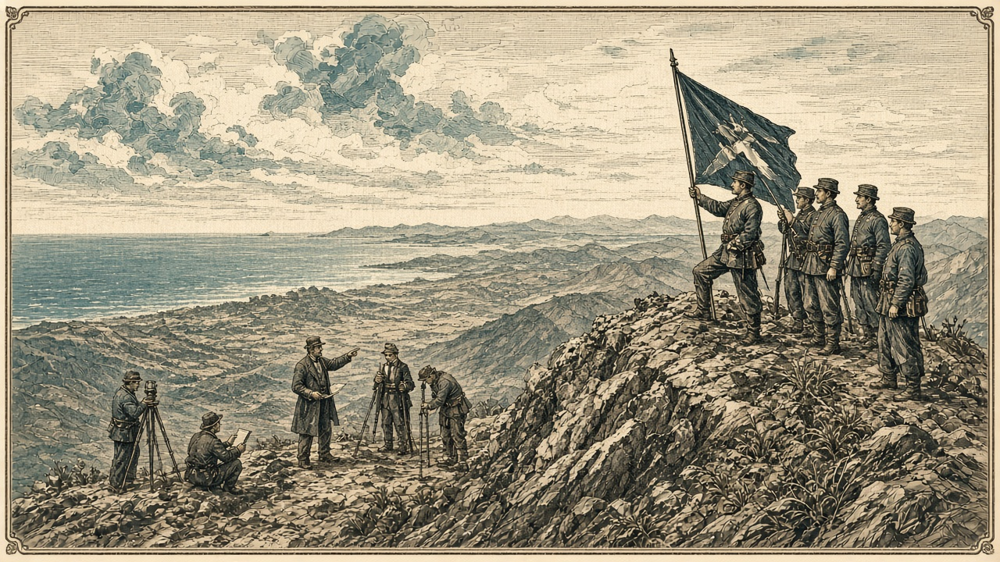
【政治部】カペレナ王国は中立地域の山（21,14）を占領した。旧蒼森辺境伯領が消滅したあとの空白地で、王国の陸地がさらに広がった。同じ期、王国の巡洋艦（14,8）が（15,10）へ艦砲射撃を開始した。造船も（14,11）で実行された。
黒潮は軍港（16,8）と平地（17,9）など四区画を保ち、カペレナとは交戦していない。前期から続く（17,10）の領有問題も決着していない。今期、カペレナは旧蒼森周辺の山を占領し、巡洋艦を動かして造船を進めた。
オリョルッルと藍岬の開戦は第224期、黒潮とオリョルッルの開戦は第225期に予定される。今期に宣戦した黒潮は、開戦まで艦隊を配置する期間に入った。宣戦を発した期と実際に戦闘が始まる期を分け、次号以降の戦況を追う。

諸国算盤店
宣戦の期も、珠で確かめる。
算盤・台帳。
各地の算盤店
7面社会 火災
災害
火災十五件 五万九千四百人が死亡
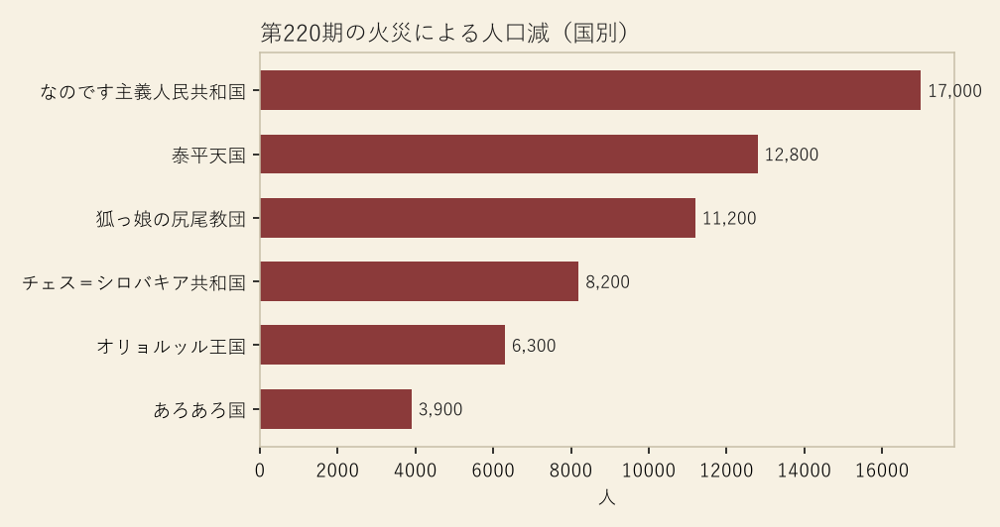
【社会部】第220期の火災は十五件、死者は五万九千四百人。なのです主義人民共和国が一万七千人、泰平天国が一万二千八百人、狐っ娘の尻尾教団が一万千二百人。チェス＝シロバキア共和国八千二百人、オリョルッル王国六千三百人、あろあろ国三千九百人。
件数は前期の二十四件から九件減り、死者は前期より三万九千三百人少ない。それでもなのです一国で一万七千人、泰平で一万二千八百人が死亡した。火の消えた街区では、家財を探す家族と、焼けた梁を運び出す隣人が同じ路地に集まる。公報に並ぶのは国別の合計で、どの家が残り、どの世帯が避難したかまでは記されていない。町の記録所や消防組が被害をまとめる間も、避難した人々は親類宅や公会堂に身を寄せ、衣服や寝具を近隣から借りる。行政の集計が届く前に、住民同士の助け合いが始まっている地域もある。
狐っ娘の尻尾教団では一万千二百人、チェス＝シロバキア共和国では八千二百人が死亡。火災後の町では、パンを焼く職人、荷車を引く人、屋根を直す大工が一度に必要になる。戦時の動員で働き手が減った地域ほど、復旧の遅れは市場の品薄や配給の遅れとして住民に返ってくる。
オリョルッル王国では町（9,39）で三千九百人、都市（45,37）で二千四百人が火災で死亡した。後者は翠湖の兵站が落ちた戦線に近い。兵站の占領と火災は別の出来事だが、同じ期に住民の働き手と軍の輸送を削っている。救援の人員をどちらへ回すか、町の役人や軍の担当者には難しい判断が続く。
電都 粉挽き組合
焼け跡のあとに、新しい粉を。
麦粉・雑穀。
なのです・電都
8面経済・国土
相場
弾薬は8.60 横ばい続く
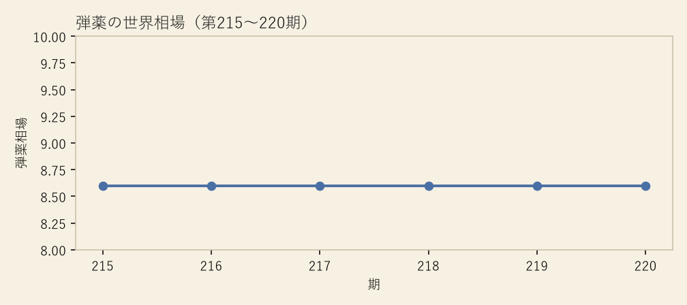
| 民間取引と資源開発 | |
|---|---|
| 教団・オリョルッル間 | 石材56単位、12期ごとに2口 |
| 鉱山・油田 | 2地点を段階3から4へ改良 |
| 改良費 | 各300億円、石材10・木材10 |
世界相場の弾薬は8.60。図の期間を通じて価格は横ばいで、金野など補給の苦しい国にとっては、相場より購入資金や輸送手段の確保が課題となる。
隣の損害図は公報に載った陸上戦の数字を並べたもの。海上の砲撃や商船の損傷、沈没は含めていない。大きな棒だけを見て勝敗を決めず、占領地点、投降兵、戦線の数と合わせて読むと、各国の消耗の向きが見えてくる。今期は兵站の占領と投降があり、損害の数字に加えて、どの倉庫と部隊が相手の手に渡ったかも戦況を左右した。
更新
陸から艦を撃てる 乗り込んで奪船も
【経済部】画面の決まりが更新された。陸上の部隊から敵の艦を撃てるようになり、軍港には耐久力が付いた。敵の船へ部隊を乗り込ませ、船を奪うこともできる。新造艦には守備隊を乗せられ、単独で動く艦には目的地を指定できる。
乗り込みを無効にした後でも、船に残った部隊へ下船を命じられる。駆逐艦の編成を変えた後は、新しい艦隊に指示を出す。軍艦の建造費と海戦の処理も改められた。黒潮は今期、四つの艦隊に目的地を設定した。単独艦にも進路を指定できるようになり、艦隊を組み替えた後の命令の出し直しも重要になる。
銀行では自動出金、融資、払い戻し、利息の扱いが改善された。民間への売却や国庫による買い戻しの方針も設定できる。市場で品物を売る時期と、戦費を確保するために国庫へ戻す時期を分けて管理しやすくなった。海上の新機能と経済の変更は別々に見えるが、艦の建造費や補給品をどう用意するかという点で、国の運営に結び付く。
諸国算盤店
奪船のあとでも、珠で確かめる。
算盤・台帳。
各地の算盤店
9面国特集 シンジケート連邦
国特集
シンジケート連邦 釜と工具棚の連帯
人口4万3,500 兵力5万6,000 領土5 カペレナと戦争中
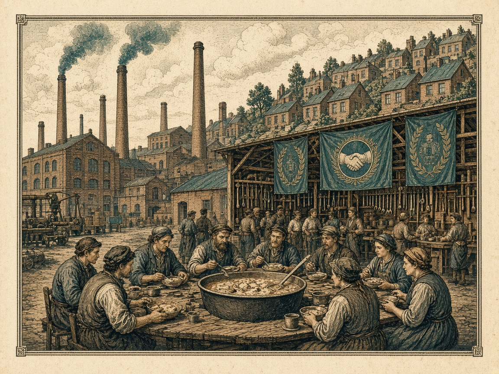
【特集部】シンジケート連邦は人口四万三千五百人、兵力五万六千人、領土五区画。食糧は六十九万四千九百トン、国庫は五百二十七億円。首都はプライム（16,74）。交戦国はカペレナ王国。国の表明欄には「人民のために。」と短く記されている。
同盟軍の一員として青海・胡椒・黒潮と並ぶ。職能組合と共同食堂が暮らしの中心で、班ごとに釜の当番を決め、工具棚の鍵は職場が管理する。修理屋の看板には「直せる物」とだけ書かれ、持ち込まれた椅子や歯車をその日のうちに戻す職人がいる。
プライムの朝は、工場の汽笛より先に食堂の湯気が立つ。豆と芋の大鍋にパンを添え、珈琲は休憩の合図だ。共同菜園では班が交代で草を引き、収穫は食堂と各戸の棚へ分けられる。戦争中でも、職場対抗の球技は休日の広場で続く。
カペレナとの戦争は続くが、今期の陸上損害は公報に載っていない。艦船は十隻。領土は五区画で、海路の見張りと工場の生産を限られた人員で回す。国庫五百二十七億円、食料六十九万四千九百トンという備えを、艦船の維持、職場の食堂、交易のどこへ配分するかが連邦の実務になる。
共同食堂の掲示板には献立表の隣に修理当番と球技の日程が貼られる。工場の人々は、交代勤務を終えてから広場へ出て、夕方には工具棚の不足品を記録する。組合の連帯は大きな演説より、鍋を洗う手や壊れた道具を翌朝までに戻す仕事に表れる。祭りの準備も各班が受け持ちを決め、紙を切る人、灯りを吊る人、鍋を見張る人に分かれて進めた。
戦争の数字が出ない期にも、艦船十隻の整備や港の荷役は止まらない。カペレナとの戦線を抱える連邦が、同盟の船を受け入れる港と、働く者の暮らしをどう両立させるか。次号は青海共和国を取り上げる。
| シンジケート連邦 | |
|---|---|
| 人口 | 4万3,500人 |
| 兵力 | 5万6,000人 |
| 領土 | 5区画 |
| 食料 | 69万4,900トン |
| 国庫 | 527億円 |
| 戦争 | カペレナ |
| 陣営 | 同盟軍 |
工場食堂、班の釜、工具棚、共同菜園、修理屋「直せる物」、珈琲。
プライム 直せる物
壊れたら、棚へ。
修理・工具。
シンジケート・プライム
10面気象
実況
夏の空 曇りが多く雷は七つ
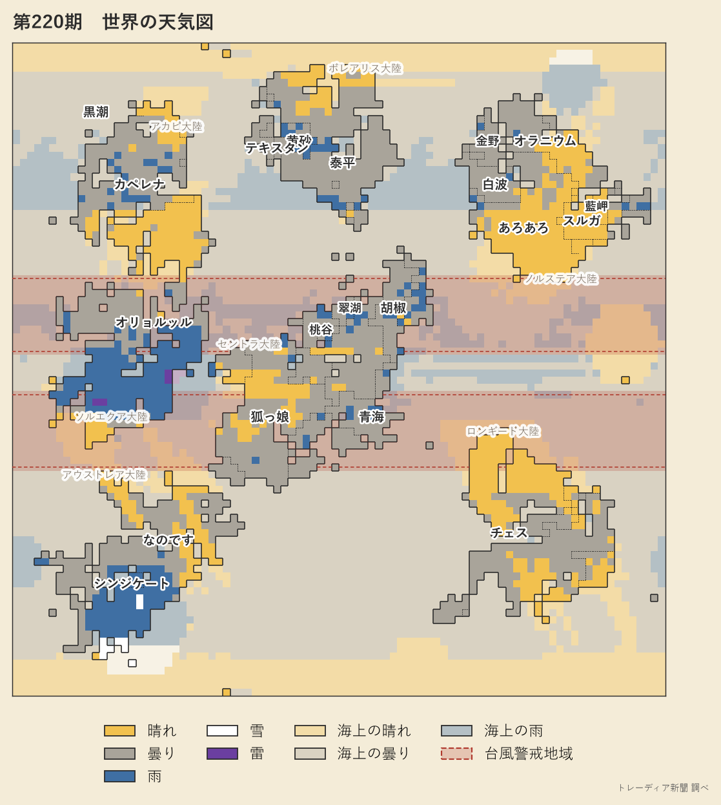
晴れ千九百六十三、曇り五千六十、雨千十六、雪五十四、雷七。曇りが全八千百区画の六割を超えた。晴れは前期より五十九区画減、雨は百八十八区画減、雪は三十一から五十四へ増えた。雷は五から七へわずかに増えた。
雲が広がる一方で雨の区画は減り、畑の乾きと日照不足が同時に気になる地域がある。高地の雪は夏でも消えず、山越えの荷運びは通行確認が欠かせない。第221期の予報図には台風警戒帯を重ねた。外洋を渡る商船は、帯を避ける航路と寄港の余裕を点検したい。
見通し
第221期予報 沿岸は警戒帯を確認
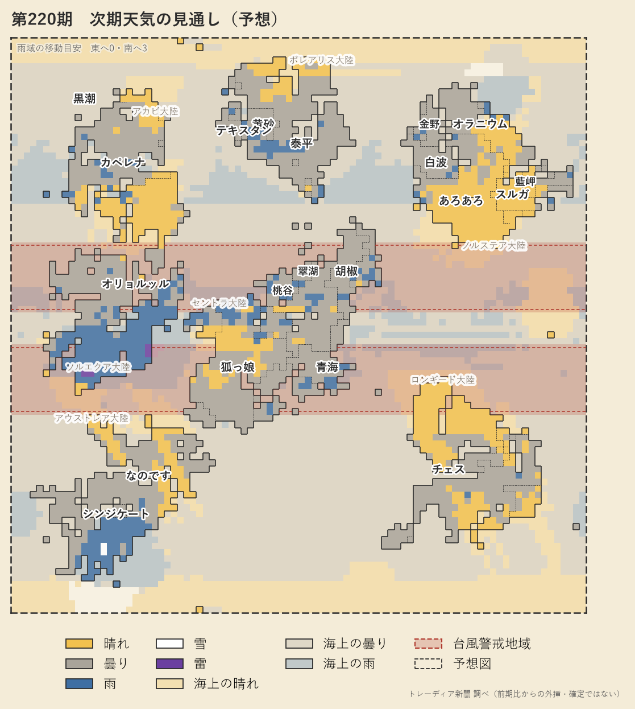
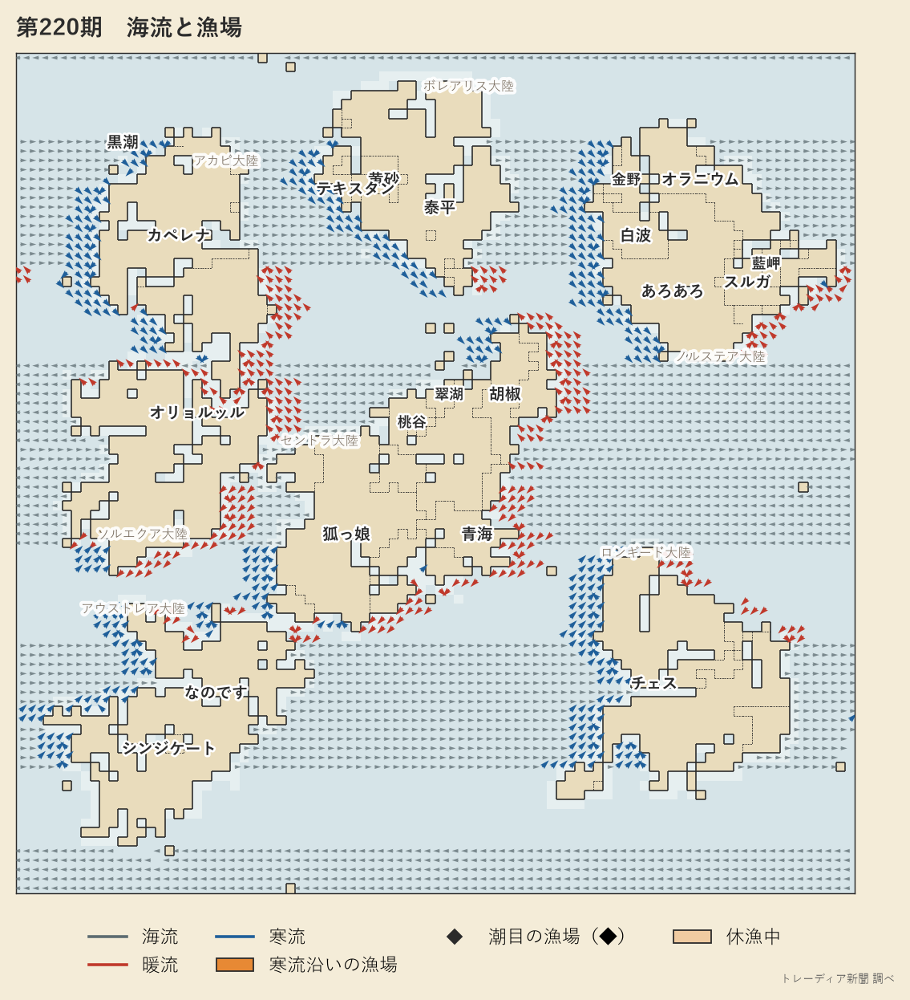
航海量の上位は青海共和国千二十七、なのです主義人民共和国八百七十二、カペレナ王国六百七。港ごとの集計は、船が行き交う量の多さを示す。青海は首位で、なのですも八百を超え、カペレナも六百を上回った。輸送船と軍艦が同じ海域を使う夏は、寄港地の混雑や荷役の遅れも航海計画に響く。
台風警戒帯に入る船は、予報の更新を確かめてから出帆時刻を決めたい。海流図は遠回りを避ける手掛かりになるが、沿岸の警戒帯や港の受け入れ状況も合わせて見る必要がある。次期、海上輸送が多い三国の船がどの航路を選ぶか、港の掲示と航海量の変化を追う。
天都 和紙店
号外の紙を、整え直す。
和紙・朱墨。
泰平・天都
11面文化
行事
灯籠の労働祭 工場の庭に湯気と灯り
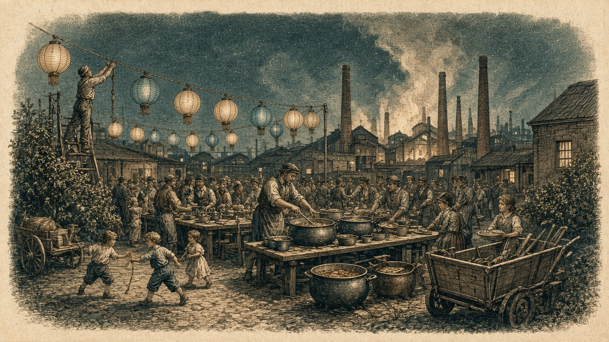
【文化部】シンジケート連邦の首都プライムで、夏の労働祭が開かれた。各班が紙の灯籠を庭に吊るし、大鍋の定食を長机に並べる。子どもは工具のカートのそばで鬼ごっこをし、休憩の珈琲が配られると職人たちが輪に戻る。
祭りの主役は新しい機械ではなく、直した物の披露だ。椅子の脚、歯車、壊れかけたランプが台に並び、「直せる物」の職人が手順を短く説明する。勝敗よりも、班の釜が最後まで底を見せないことが誉れとされる。
戦争中でも灯籠は消さない、と組合の掲示は書いた。カペレナとの戦争が続くなか、職場の灯りは連帯の合図でもある。祭りには工場の家族だけでなく、修理屋や食堂の働き手も加わり、古い部品から作った小さな飾りを持ち寄った。子どもたちは紙灯籠の絵を描き、大人は片付けの担当を決めてから鍋を囲んだ。
「灯りを飾る紙も、鍋の豆も、誰か一人が用意したものではない」と参加した組合員は話す。祭りが終わると灯籠は倉庫へ戻り、翌週の当番表が張り出される。祝日の一日は、翌朝から再開する仕事の段取りまで含めて、町の暮らしに組み込まれている。
| 灯籠の労働祭 | |
|---|---|
| 場所 | プライム工場の庭 |
| 見どころ | 灯籠・大鍋・修理の披露 |
プライム 班の珈琲
灯籠のあとに、一杯。
珈琲・豆粥。
シンジケート・プライム
12面入門講座
入門第68回
乗り込んで奪船 陸からも艦を撃つ
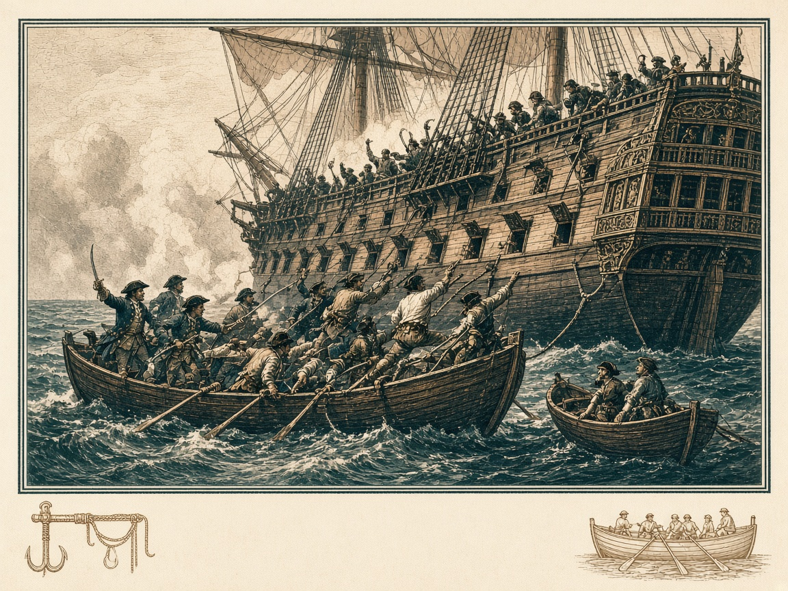
【編集部】今期から、敵の船に部隊を乗り込ませて船を奪えるようになった。乗り込みを無効にした後でも、船に残った部隊へ下船を命じられる。陸の部隊から敵の艦を撃つこともでき、軍港には耐久力が付いた。
海戦では艦同士の撃ち合いや魚雷、艦から陸上への砲撃に加え、陸上部隊から敵艦を攻撃できるようになった。港を守る側は、艦を停泊させるだけでなく、沿岸の砲兵をどこへ置くかも考えることになる。軍港には耐久力が設定され、攻撃を受けた際の損傷を確認して修理や防衛の手当てを進める。港の損傷と、港内の艦艇が受けた被害は分けて記録したい。
奪船は撃沈と異なり、乗り込みに成功した艦を自国の戦力として扱う。新造艦には守備隊を乗せられ、単独艦にも目的地を指定できる。出航前に乗員を配し、艦隊を再編した後は新しい編成へ命令を出す。敵艦を沈めるか、制圧して利用するかで必要な兵と作戦が変わるため、戦況記事でも結果を分けて伝える。
紙面で撃沈と奪船を混同しないこと。撃沈は船が海に沈む結果、奪船は乗り込みに成功した結果だ。陸からの射撃で艦が壊れた場合も、乗り込みの成否とは別欄で追う。戦況図に艦の印だけが残る場合は、所属が変わったのか、損傷したのか、沈没したのかを公報で確かめる。捕獲した船に乗員が残っているか、下船命令が出たかも、その後の扱いを読む手掛かりになる。
新しい命令が増えるほど、出した指示と実際に起きた結果を分けて記録することが大切だ。目的地を設定しただけでは到着したことにならず、乗り込みを命じただけでは捕獲成立とはならない。速報では命令、交戦、結果を順に確かめ、後報で訂正があれば明記する。
- 撃沈と奪船を分ける
- 陸からの射撃を港の配置と読む
- 軍港の耐久力を確認する
- 単独艦の目的地指定に注意
セルヴァナ 桟橋計器
奪船の週も、方位を。
方位盤・気圧計。
青海・セルヴァナ
13面短信
黒潮 オリョルッル王国へ宣戦（225開戦）。理由は胡椒の民間商船への攻撃継続。人口3万4,100、領土4、交戦国は今期末なし。評議会発言の詳細は2面。
胡椒商船 今期も戦艦の攻撃。（48,29）（49,29）で損傷、（49,30）で撃沈。胡椒は同盟軍。
翠湖 兵站（45,36）（46,37）がオリョルッル領。投降1,400＋1,600。損害は王国200／翠湖3,100。
カペレナ 山（21,14）占領。巡洋艦が（15,10）へ艦砲。藍岬戦1,300／4,700、スルガ戦2,200／3,200。
スルガ×オリョルッル 損害5,500／1,100。王国は上陸（51,29）。藍岬は王国へ停戦打診（未合意）。
なのです×白波 損害10,300／4,700。橙原戦は200／4,300。
テキスタン×泰平 6,300／1,600。白波×泰平は4,600／2,400。
交易 狐っ娘の尻尾教団とオリョルッルの民間取引で、石材56単位を12期ごとに搬入する契約を2口締結。
開発 鉱山・油田の2地点を段階3から4へ改良。各300億円、石材10・木材10を投入。
海上 テキスタンの商船と中立海賊船が駆逐艦に撃沈された。オリョルッルは戦艦を建造し、カペレナも造船。
火災 15件・5万9,400人。なのです1万7,000、泰平1万2,800、教団1万1,200。
控え 224オリョルッル×藍岬、225黒潮×オリョルッル。
決まり 陸から艦を撃つ、軍港に耐久力、乗り込んで奪船、単独艦の目的地指定。
セルヴァナ 桟橋茶舗
号外のあとに、一服。
麦茶・塩豆。
青海・セルヴァナ
14面編集後記
第220期、黒潮自治国はオリョルッル王国へ宣戦した。開戦は第225期。黒潮は、同盟国・胡椒帝国の民間商船が攻撃されていることを理由に挙げる。今期も二隻が損傷し、一隻が沈没した。攻撃を止め、商船の航路を守るという主張には、被害の裏付けがある。
一方、潮見玄吾議長は評議会で「はんで」の恩恵や世界制覇を語り、緑丘と黄砂を引き合いにオリョルッルを挑発した。商船保護の説明から征服の誇示へ移る演説は、黒潮が掲げる目的を分かりにくくしている。政府が示した宣戦理由を実行するなら、まず攻撃を止めるための艦隊配置と、同盟国との連携を具体的に示す必要がある。
開戦まで五期。黒潮の人口は三万四千百人、領土は四区画、艦船は九隻。今期は四艦隊に目的地を設定した。巨大なオリョルッル王国に対し、限られた艦をどこへ配し、商船をどの海域で護衛するのか。威勢のよい声明より、次期以降に示される配置と航路が政府の本気を測る材料となる。
開戦まで五期。胡椒商船への攻撃が止むのか、黒潮がどの海域に艦を配するのか。宣戦の言葉が実際の護衛と航路の安全につながるかを、次号以降も追う。